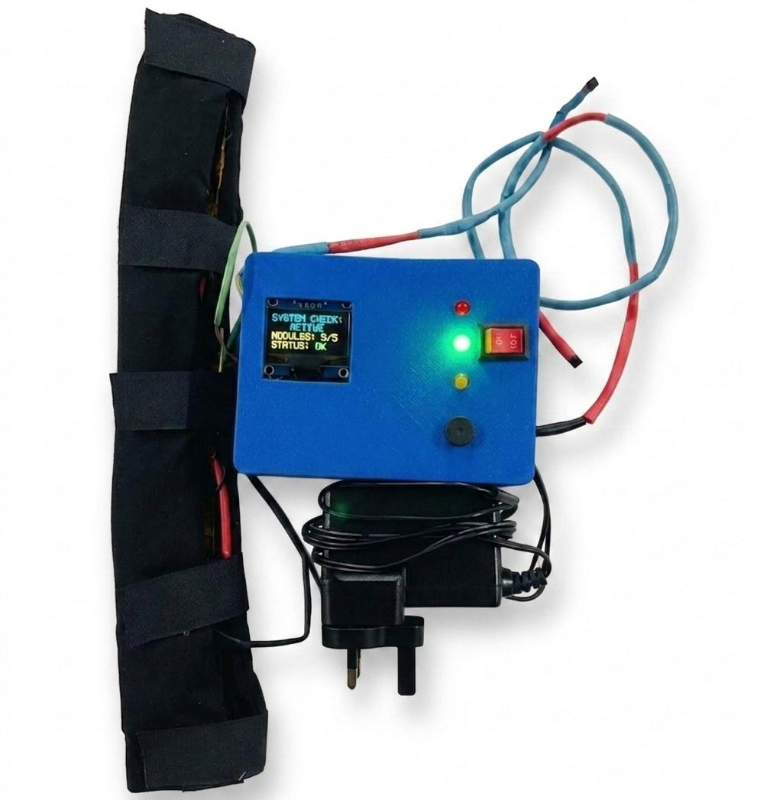

Neo-Thermo · working prototypeDukeEngage BioSpark · Summer 2026
Neo-Thermo
An approximately $65 early-stage system designed to monitor and warm gas in neonatal respiratory tubing for resource-limited hospitals.
- 0.64°C
- temperature-model MAE
- 8/10
- estimates within ±1°C
- ~300
- healthcare needs reviewed
My role: Duke-side electronics integration, Arduino programming, troubleshooting, and preliminary thermal testing.
Read the case study